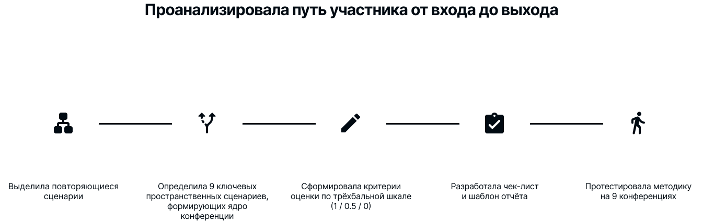
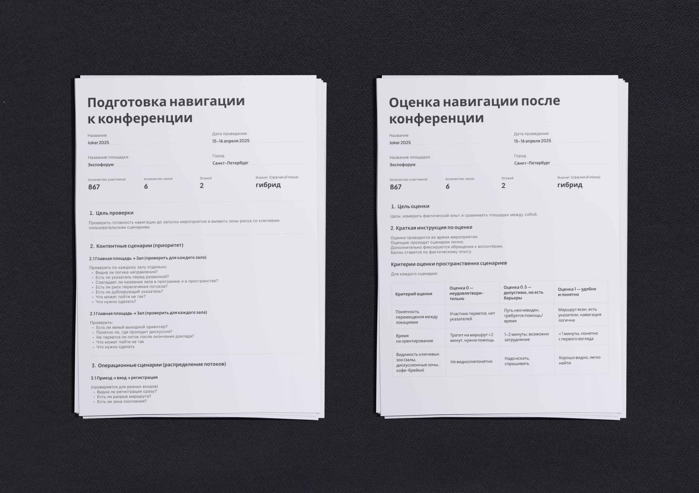

Моя роль
Product Designer
Отвечала за:
- формализацию проблемы отсутствия измеримости;
- проектирование структуры метрики и критериев оценки;
- разработку пользовательских сценариев офлайн-передвижения;
- тестирование методики на 9 конференциях;
- внедрение стандарта оценки в работу Event-, CX- и Marketing-команд.
Работала на стыке UX-исследования, операционного анализа и продуктового подхода к метрикам.
Контекст
Компания ежегодно проводит крупные офлайн-конференции на разных площадках.
Навигация в таком формате — часть операционной системы события:
- исправлять ошибки «по ходу» невозможно,
- плотность потоков усиливает любые недочёты,
- площадки меняются, а опыт должен быть воспроизводимым.

Проблема
Каждая конференция решала проблему навигации заново, без накопления знаний и возможности сравнения площадок и решений между событиями.
- Не существовало объективной системы оценки.
- Команды обсуждали проблемы на уровне ощущений.
- Невозможно было сравнить площадки между собой и видеть динамику.
Навигация напрямую влияет на NPS — но при высокой плотности потоков она разрушает опыт участника и может привести к уходу с мероприятия. При этом никакого способа измерить это не существовало.

Почему именно метрика
Наблюдения были разрозненными, жалобы — ситуативными, приоритеты — неочевидными.
Метрика позволила:
- сравнивать сценарии между собой,
- выявлять зоны перегрузки,
- принимать решения до мероприятия, а не в моменте.
Процесс
Проанализировала путь участника от входа до выхода.
- Выделила повторяющиеся сценарии передвижения.
- Определила 9 ключевых пространственных сценариев, формирующих ядро навигации.
- Сформировала критерии оценки по трёхбалльной шкале (1 / 0.5 / 0).
- Разработала чек-лист и шаблон отчёта.
- Протестировала методику на 9 конференциях.

Я осознанно не вводила веса сценариев. Несмотря на разную функциональную значимость зон, каждая из них влияет на непрерывность участия. Для быстрого и воспроизводимого инструмента было важно сохранить простую и равную модель оценки.
Критерии оценки пространственных сценариев
| Тип | Критерий оценки | Оценка 0 — неудовлетворительно | Оценка 0.5 — допустимо, но есть барьеры | Оценка 1 — удобно и понятно |
|---|---|---|---|---|
| Пространственные | Понятность перемещения между локациями | Участник теряется, нет указателей | Путь неочевиден, требуется помощь/время | Маршрут ясен, есть указатели, навигация логична |
| Время на ориентирование | Тратит на маршрут >2 минут, нужна помощь | 1–2 минуты, возможно без помощи | < 1 минуты, понятно с первого взгляда | |
| Видимость ключевых зон (залы, дискуссионные, кофе-брейки) | Не видно/непонятно | Надо искать, спрашивать | Хорошо видно, легко найти | |
| Ситуативные | Доступность информации о возможностях | Нет явных источников (стендов, инфо-экранов) | Информация доступна, но разбросана | Информация централизована и заметна |
| Понятность инструкций, действий | Неясно как участвовать | Понял, но потребовалось усилие | Понял сразу, всё ясно и доступно | |
| Временно-пространственные | Согласованность расписания и пространства | В расписании неясно, где будет активность | Есть путаница, но можно разобраться | Расписание и локации синхронизированы |
| Простота и понятность записи на активности | Нет записи или сложная механика записи | Записался, но процесс неинтуитивный | Легко записаться, понятный механизм |
Решение
Методика включает:
- сценарную структуру анализа,
- критерии оценки по зонам,
- числовой Navigation Score,
- шаблон отчёта для сравнения площадок,
- рекомендации по размещению указателей и карт.
Система спроектирована так, чтобы аудит можно было провести за 1–2 часа без участия дизайнера.
Результаты
